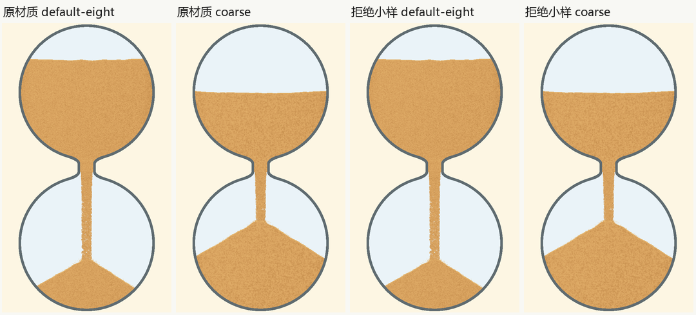
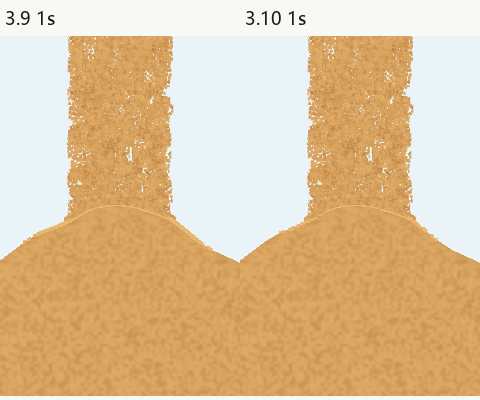

3.10：反例与复查
审核目标：借鉴候选01的局部表现，用小改动改善触坡后的连贯性。正常尺寸没有明显收益的候选不保留，未查项不登记为通过。最终状态、源身份及两份独立审核见发布登记。
| 发现 | 证据和严重程度 | 决定 |
|---|---|---|
| 微粒明暗小样收益不足 | P2候选不达保留条件。对比增益1.6→1.3并增加固定弱明暗，默认、粗细、黑沙正常尺寸差异很小，粗档略趋平。 | 拒绝候选，正式渲染器保持3.9字节一致。失败原图、源码、独立拒绝报告入包。 |
| 接触后反复小跳、累计接触时间失真 | P2明确模型缺陷。旧粒子触坡后下一帧重新作自由落体，代表性测试离面最高3.24px；接触年龄仅命中时累计，部分代表状态额外存活约2.1秒。 | 持久接触态沿同一表面运动，按原接触与停稳预算结束。修前失败用例保留，修后8项通过；视觉只称局部修复。 |
| 涨堆让旧粒子重新冒出 | P2明确模型缺陷。纯模型涨堆8px时，旧实现把粒子上抬约7.7px。 | 已被明显埋藏的接触粒子原地停稳，使用既有遮挡，不上抬复活。连带复查1秒堆内亮弧及5/50末段。 |
| 5秒首次涨堆偏快 | P2既有保留项。正式录像与旧3.9均可见，主堆积模型本轮未改。 | 保持问题登记，不用本轮接触修复宣称已解决。 |
| 正常尺寸整体变化很小 | 小样独立审阅明确，不能写成明显观感升级。 | 最终范围收敛为触坡支持、局部连贯性与有限停稳；保留原直束和细孔观测。 |


独立源码审核 · 独立动态审核 · 材质拒绝结论。动态结论仅覆盖记录列出的原生尺寸画面和实际连续解码窗口，未声称完整播放全部录像。源码审阅不能代替外观判断。
证据包保留最终原图、连续帧、实录、基线、测量源码、修前失败及被拒候选；开发证据单独标注，未重新标为最终源码。本轮没有重存旧基线或放宽阈值。Android、音频、实际屏幕FPS、完整应用均未判通过。